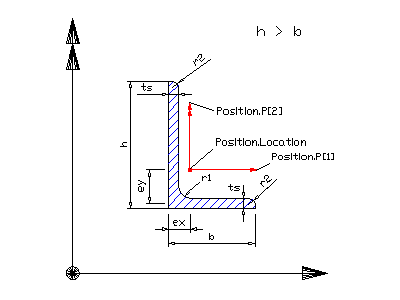
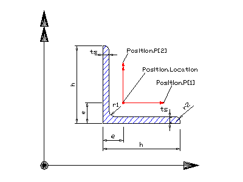

IfcLShapeProfileDef
Definition from IAI: The IfcLShapeProfileDef defines a
section profile that provides the defining parameters of a non equal-sided,
L-shaped section to be used by the swept surface geometry or the swept area
solid. Its parameters and orientation relative to the position coordinate
system are according to the following illustration. The shorter leg has the
same direction as the positive x-axis, the longer leg the same as the positive
y-axis. The centre of the position coordinate system is in the profiles centre
of gravity. Its location is given by the parameters ex and ey. Illustration:  HISTORY: New entity in Release
IFC2x Edition 2.
Figure 1: Parameters of non equal-sided, L-shaped section
definition
Figure 2: Parameters of equal-sided, L-shaped section
definition
EXPRESS specification:
|
| Depth | : | Leg lengths, see illustration above (= h). |
| Width | : | Leg lengths, see illustration above (= b). If not given, the value of the Depth attribute is applied to Width. |
| Thickness | : | Constant wall thickness of profile, see illustration above (= ts). |
| FilletRadius | : | Fillet radius according the above illustration (= r1). If it is not given, zero is assumed. |
| EdgeRadius | : | Edge radius according the above illustration (= r2). If it is not given, zero is assumed. |
| LegSlope | : | Slope of leg of the profile. If it is not given, zero is assumed. |
| CentreOfGravityInX | : | Location of centre of gravity in x axis. The positive measure is applied according to the above illustration (= ex). |
| CentreOfGravityInY | : | Location of centre of gravity in y axis. The positive measure is applied according to the above illustration (= ey). If not given CentreOfGravityInY equals to CentreOfGravityInX. |
| WR1 | : | The thickness of the flange has to be smaller than the depth of the profile. |
| WR2 | : | The thickness of the flange has to be smaller than the width of the profile (if given). |
| WR3 | : | If the Width attribute is given, also the CenterOfGravityInY attribute shall be given. If the Width attribute is not given, also the CenterOfGravityInY attribute shall not be given. |
|